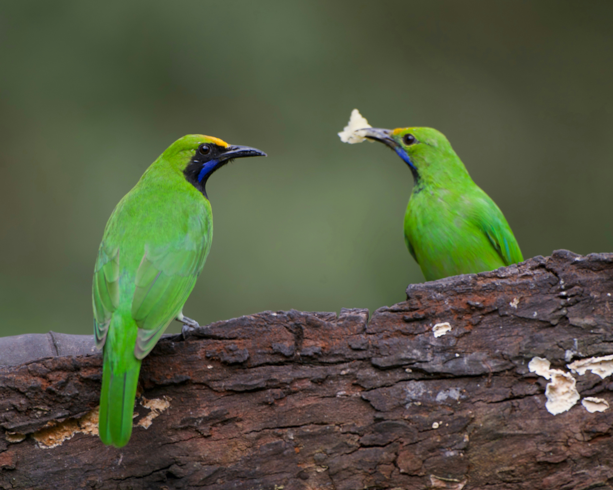

The Golden-Fronted Leafbird is a bright green forest bird named for the golden-yellow forehead found on many males. It has a green body, dark face markings, and a strong, slightly curved bill. These birds spend much of their time in the canopy, feeding on fruit, nectar, and insects. Their vivid plumage can make them surprisingly difficult to spot among leaves. It can be distinguished from other green leafbirds by its golden-yellow forehead and the characteristic combination of green plumage and dark facial markings. Compared with the similar Common Iora, it is distinguished by the combination of features described above. Its preference for tropical forests, forest edges, gardens, plantations, and wooded areas also helps separate it from species that use different habitats. Its characteristic behaviour, including active canopy-dweller that searches among leaves and flowers for food, provides another useful field clue. Taken together, these differences make it easier to distinguish from similar species when the bird is seen clearly.